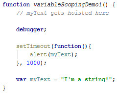
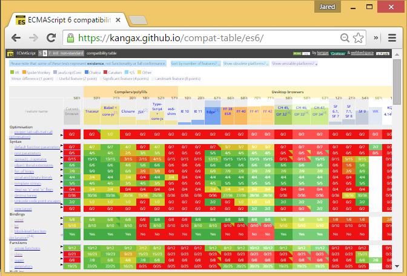
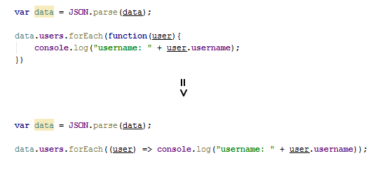

ECMAScript 2015 & JavaScript
Don't Get Left Behind
Created by Jared Faris / @jaredthenerd
jaredthenerd.com
Obligatory About Me Section
Shameless Conference Promotion
- Stir Trek (May 6th): http://stirtrek.com
- Dog Food (Fall): http://dogfoodcon.com
- CloudDevelop (Fall): http://clouddevelop.org
Brief History of JavaScript

A bit of clarification
ES6 or ES2015?
But first...
Some fun JS to break the ice
JavaScript is object oriented
// what does this do?
"hello".toUpperCase();
// so then what does this do?
2.toString();
JavaScript Parameters
function fooBarConsoleTest() {
// what code goes here?
}
test("FooBar"); // to get the console to say "FooBar"
function fooBarConsoleTest() {
console.log(arguments[0]);
}
test("FooBar");
Type Conversions
What does this return?
[]+(-~function(){}-~function(){}-~function(){}-~function(){}) + (-~function(){}-~function(){})
One more...
What does this do?
Hoisting Example
Variable Hoisting
Variables can be used before they are declared because of how JS is parsed.
Where Variables Get Hoisted

JavaScript is weird
ES2015 doesn't fix this. It just adds useful features onto the weird.
Can I Use This ES2015 Stuff?
No. Yes. Sort of!
Support
Transpiling
A compiler that translates one language (ES6) to another (ES5).
Demo using Grunt-Babel
grunt transpileLook at the samples-dist directory.
This Presentation
Load index-dist.html after transpiling
ES6/2015 vs ES5 examples
https://github.com/addyosmani/es6-equivalents-in-es5#modulesPerformance
It probably doesn't matter
Variable Scoping
ES5 Scope
- Global
- Function
- What's missing here?
Function Scope Demo
Let & Const
Let
The "let" keyword creates a local block scope.
if (myVar > 5) {
let myVarSquared = myVar * myVar;
console.log(myVarSquared);
}
Usable inside of if/else and loops.
Let Demo
Let Hoisting
This is known as the "Temporal Dead Zone"
Limitations
- Switch statements are a single block
- Supported in Chrome, Edge and Firefox. Requires strict mode.
Const
Creates a read only reference in global, function or block scope.
function() {
const MY_PREFIX = "test";
var myString = MY_PREFIX + "string"; // "teststring";
MY_PREFIX = "test2"; // throws an error
const MY_PREFIX = "test2"; // also throws an error
}
Immutability
Constants don't hold immutable values, they hold read-only references to a value.
Limitations
- If you aren't in strict mode, block scope won't exist. Constants will be in function or global scope
- Browsers aren't consistent on their error messaging
- Errors aren't consistent between strict and normal modes
Classes
Class Declaration
class Profile {
constructor(emailAddress) {
this.emailAddress = emailAddress;
}
updateEmail(newAddress) {
// some code
}
}
Class Expression
var Profile = class {
constructor(emailAddress) {
this.emailAddress = emailAddress;
}
}
var Profile = class Profile {
constructor(emailAddress) {
this.emailAddress = emailAddress;
}
}
Using a Class
Classes are Functions
Setters and Getters
Inheritance & Subclassing
Super
Calls the corresponding function or constructor on the parent class.
Static Methods
Methods that exist on the class, and not on instances of it.
Prototypical Inheritance
Classes are syntactical sugar over PI. You can still use the object's prototype
Other Oddities
- Class declarations/expressions are internally "strict mode"
- Semicolons are allowed between methods and not required
Limitations
- Supported in Chrome, Edge, Firefox and Safari as of 3/28/2016 and requires strict mode
Arrow Functions
Arrow Function Syntax
var oldWay = function (param1, param2) {
// do stuff
};
var newWay = (param1, param2) => {
// do stuff
};
How Arrow Functions Work
- Similar to a lambda expression
- Can have 0+ parameters
- Can be saved in a named variable
Two Primary Benefits
- Shorter functions
- Lexical this
Shorter Functions
Improved?
Arrow... see what I did there?
Cleaner Syntax
var people = [{name: "John"}, {name: "Amy"}];
people.map(function(person){
return person.name;
}).forEach(function(name){
console.log(name);
});
people
.map((person) => person.name)
.forEach((name) => console.log(name));
Lexical?
- Lexical scoping - scope is defined by where a function is defined
- Dynamic scoping - scope is defined by the program's state at execution
- JavaScript is generally lexically scoped
- Depending on how you copy or refer to a function, you may change `this`
- This is very confusing
Lexical This
When To Use?
- When creating methods (reusable function objects), use functions
- When creating subroutins/callbacks, use arrows
- Really good when chaining functional methods
Bonus: Immediately Invoked Arrow Functions
(x => x^2)(9); // 81
Limitations
- Supported by Edge, Firefox and Chrome
Promises
Promises and Futures
- Future - a value that will be set at some point in the future
- Promise - An asynchronous function that will set this value
- Used in asynchronous programming to allow parallel processing
- Allows you to proxy something that hasn't actually been set yet in code
- Useful for reducing callback chains
Callbacks
//asyncCall(successCallback, errorCallback)
asyncCall(function(data) {
// if successful, make another call with the data
asyncCall2(data.someProperty, function(data) {
// do something
asyncCall3(data.someOtherProperty, function(data) {
// do something else
}
}, function (data) {
// error handling
}
}, function(data) {
// error handling
}
Pyramid coding
Promises
asyncCall()
.then((data) => asyncCall2(data.someProperty))
.then((data) => asyncCall3(data.someOtherProperty))
.error((data) => {
// error handling
})
Ajax Promises
Post-resolve Behavior
Attaching another "then" to a resolved promise automatically causes it to trigger.
Support
Edge, Chrome, Firefox, Safari 9
'use strict' again
Default Parameters
Setting up Default Parameters
function callService(data, version = 3.0) {
//stuff
}
Firefox and Chrome only as of 3/28/2015
Evaluated every call
Template Strings
String Formatting
console.log(`HTTP ${errorNumber} returned from ${errorURL}`);
console.log(`2 + 2 = ${2+2}`);
Template Example
Generator Methods & Iteration
Iterable Objects
- ES6 adds new protocols for iterating over objects
- Allows a "for x of y" syntax
- Built into many types (string, array, etc)
For ... Of
for (user of allUsers) {
// do stuff
}
instead of
for (index in allUsers) {
let user = allUsers[index];
// do stuff
}
Generator Idea
- Can pause their own execution with the 'yield' keyword
- Can be resumed with 'next'
- Allows repetitive or asynchronous code to be more clear
- Lets you easily make iteraotrs
Generator Methods Demo
Where are these useful
- When you want to write code that says "for ... of"
- When you want to build a complex object to parse things that gets called in chunks
- Anytime you wish you could pause a function
Modules
Built in Modules
Similar in concept to AMD or CommonJS patterns.
Export and Import
export.js
export function module1ConsoleLogger () {
console.log("Foo"); // writes "Foo"
}
import.js
import {module1ConsoleLogger} from "module-1-export.js"
function module1Demo() {
module1ConsoleLogger();
}
Limitations
You can't use these anywhere yet.
Questions?
Thank You!
jaredthenerd.com